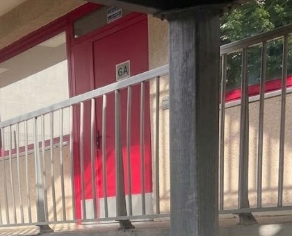

Collège Chambertin · La journée
Une journée de collège structurée
Les temps de cours, de restauration, de détente, d’étude et d’accompagnement forment un ensemble. Leur organisation doit donner aux élèves des repères stables et permettre aux équipes d’exercer pleinement leur responsabilité éducative.
Des horaires réguliers
Les élèves sont présents de 8 h 15 à 16 h 25 les lundi, mardi, jeudi et vendredi, et jusqu’à 12 h 35 le mercredi.
Les horaires détaillés et les éventuelles adaptations annuelles sont communiqués aux familles à la rentrée.
Une salle par classe
Chaque classe dispose de sa salle principale et les professeurs changent de local aux intercours.
Cette organisation réduit les déplacements, limite les pertes de temps et contribue à installer un cadre stable, particulièrement utile aux élèves de sixième.

La pause méridienne
Déjeuner, souffler, faire autre chose
Tous les élèves déjeunent au Collège
Les élèves sont demi-pensionnaires et prennent leur repas dans l’établissement.
Les menus sont élaborés avec l’appui d’une diététicienne. Des repas à thème peuvent être proposés au fil de l’année. Les modalités alimentaires particulières relevant d’un PAI sont étudiées avec l’établissement.
Un temps de détente et d’activités
La pause méridienne ne se limite pas au repas. Des ateliers sont proposés aux élèves qui le souhaitent : blog, dessin et manga, calligraphie chinoise, chant, activités physiques, club de mathématiques, théâtre ou ateliers ponctuels selon les années.
Le Collège dispose de deux cours de récréation, dont une réservée aux élèves de sixième. Cette répartition accompagne l’entrée dans le secondaire et permet une surveillance adaptée aux âges.
Quand le travail demande un appui
Accompagnement, soutien et études
Accompagnement et soutien
Lorsque l’équipe identifie une difficulté, un accompagnement peut être proposé en petit groupe, pendant la pause méridienne ou après les cours.
Le dispositif porte principalement sur les besoins repérés en français, en mathématiques ou dans l’organisation du travail. Un tutorat professeur-élève peut être mis en place pour certaines situations examinées collectivement.
Études du soir
Des études sont proposées les lundi, mardi et jeudi jusqu’à 17 h 35, après un temps de goûter.
L’étude est obligatoire dès la rentrée de sixième selon l’organisation arrêtée par le Collège, puis elle peut être suivie sur demande des familles ou proposée lorsqu’elle soutient la réussite scolaire.
Matin et soir
Présence éducative
Chaque matin, les élèves sont accueillis par la vie scolaire, le CPE ou la direction. Le soir, les mêmes adultes encadrent la sortie.
Cette présence quotidienne permet de tenir le cadre, d’identifier rapidement une situation et de faire vivre une relation éducative qui ne se réduit pas aux sanctions ou aux formalités.
Au-delà des murs
Sorties et projets
Les sorties pédagogiques et culturelles prolongent les enseignements. Un voyage est organisé pour les classes de cinquième selon le projet annuel ; les élèves de quatrième participent à des activités physiques de pleine nature.
La proximité de Paris et les partenariats du Conseil départemental des Hauts-de-Seine offrent des possibilités régulières de découverte culturelle, sportive, citoyenne et mémorielle.